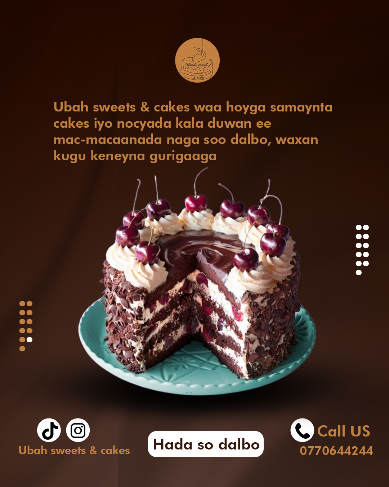

Xiisad hor leh oo weli ka taagan Marinka Hormuz; Kuwayt oo difaaceeda xoojisay iyo Baxrayn oo laga maqlay siidhiga digninta
Taliska dhexe ee Mareykanka ee Bariga Dhexe (CENTCOM) ayaa sheegtay in ay soo rideen labo diyaaradood oo nooca aan duuliyaha lahayn ah, kuwaas oo ay sheegeen in ay soo rideen Iran.
Tebin toos ah

Waxuu lahaa 'Cod ka soo kacaya culayska dhulka oo u socda meelaha ay gaadhaan malaa'igtu'
6 Juunyo 2026

Sidee aabbe iyo wiilkiisu u badbaadiyeen Soomaali iyo dad kale oo ku jiray huteelkii gubtay ee Delhi?
6 Juunyo 2026

Xiddigaha caanka ah ee Afrika ee ciyaari doona Koobka Adduunka 2026
6 Juunyo 2026

Eedaysane maxkamad dhexdeeda ku dilay garsoorahii xukumay iyo sidii ay wax u dhaceen
6 Juunyo 2026
Siyaasad

Doorashada Itoobiya: TPLF oo dalabaad cusub dirtay
4 Juunyo 2026

'Rabshaduhu waa kuwo aan laga fiirsan': Sida dunidu uga falcelisay dagaalka Muqdisho
4 Juunyo 2026

Wararkii ugu dambeeyay ee isku dhacyadii ilaa xaaly Muqdisho ka socday
4 Juunyo 2026

"Helitaanka Badda Cas": Cutub cusub oo ku saabsan khilaafka Masar iyo Itoobiya
3 Juunyo 2026

Aflagadadu ma dambi ayay ka tahay Soomaaliya?
2 Juunyo 2026

Itoobiya: Masuuliyiin doorasho oo la sheegay in ay waraaqaha codeynta ku tagri-faleen oo baaritaan lagu wado
2 Juunyo 2026

Itoobiya oo galeysa doorasho uusan qof walba codeyn karin
31 Maajo 2026

Ciidamadii shalay weeraray Baydhabo oo ka hadlay sababta ay weerarka u qaadeen
31 Maajo 2026
Ciyaaro

Man City oo tixgalinaysa tallaabo sharci ah kadib sheegashada Haaland
4 Juunyo 2026

Koobka Adduunka 2026: Wax walba oo aad dooneyso inaad ka ogaato
2 Juunyo 2026

Falanqayn: Maxaa xalay helay Arsenal ka dib Finalkeedii labaad ee Horyaalka Yurub?
31 Maajo 2026

Waa kuwee ciyaartoyda kubbadda cagta adduunka ugu qanisan?
28 Maajo 2026

10 ka ciyaartoy ee ugu mushaharka badan aduunka 2026
28 Maajo 2026

Spain: la yaab iyo taariikh aan horrey u dhicin oo uu sameeyey ninka layliya xulka dalkaas
26 Maajo 2026

Waa kuwee cayaartoyda ugu da'da weyn ee ka soo muuqan doona koobka adduunka
25 Maajo 2026

Taageerayaasha Arsenal, Liverpool, Man-United iyo Chelsea maxay ka dheheen tegista Pep Guardiola?
24 Maajo 2026
Caafimaad

Garaadka Macmalka ah oo markii ugu horraysay loo adeegsaday in uu sameeyo tallaal

Tallaalkii 'ugu horreeyay adduunka' oo ay naqshadeysay Garaadka Macmalka ah ee AI

Todobada xanuun ee ugu halista badan dunida ee qaarkod Soomaaliya lagu arkay

Ma dhab baa in miisaan qaadistu kaa caawin karto inaad cimri dheer hesho?
Taariikh

Taariikhda Imaam Axmed Gurey
7 juunyo 2026

Taariikhda sayid Maxamed Cabdlle Xasan
1 juunyo 2026
Taariikhda Soomaliya
20 maajo 2026
Taariikhda halganka dhalinyaradii urur SYL
15 maajo 2026
Social media
ADVERTISMENT
